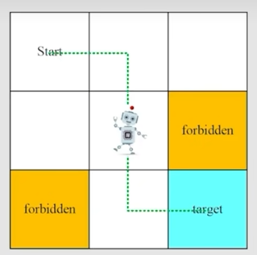
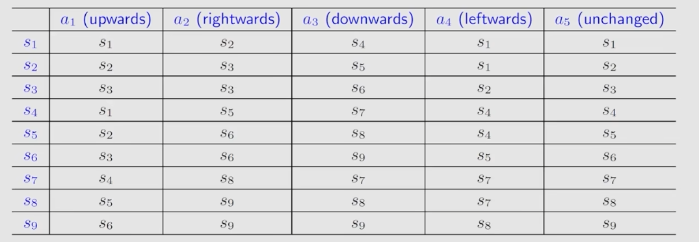
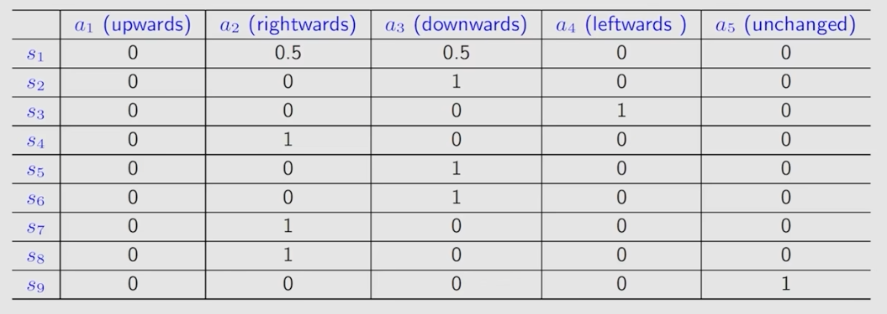
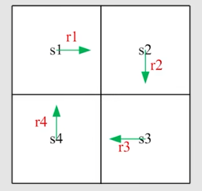
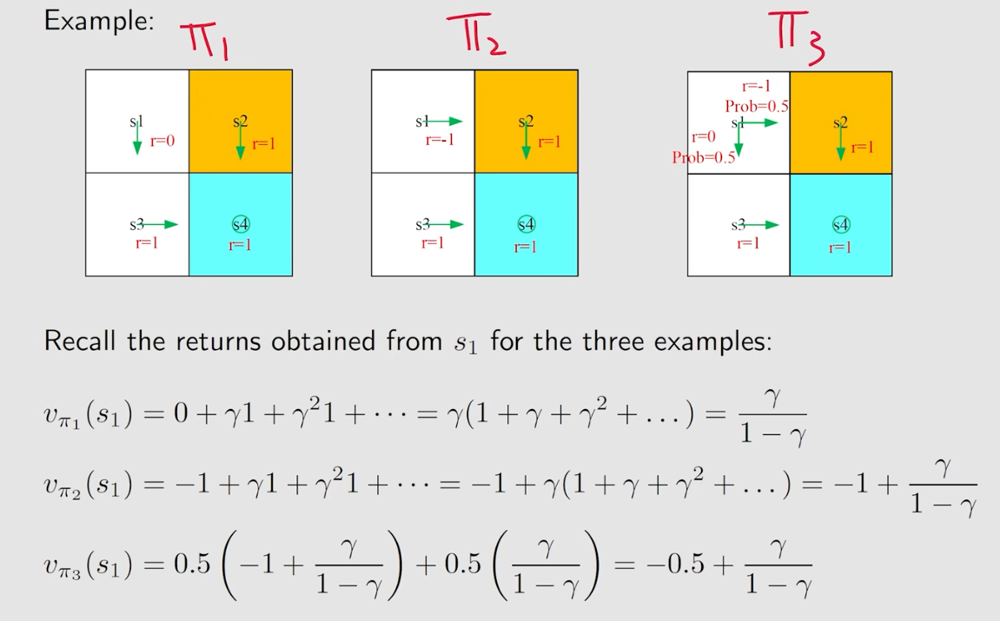
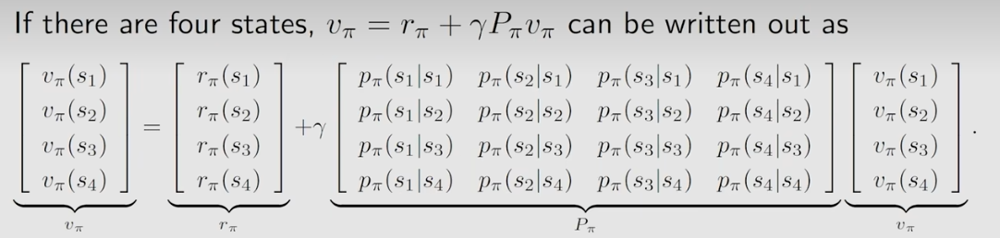
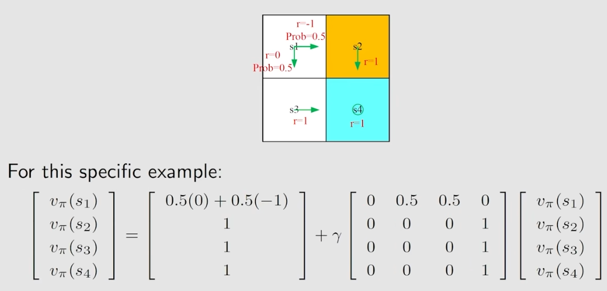
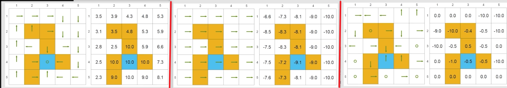

基本概念、MDP、贝尔曼公式
Follow的西湖大学赵老师的B站课程
一. 基本概念
考虑一个在强化学习里很常见的例子“Grid-world”，网格世界：

网格有以下几种类型：
- Acessible cell：可到达，即白色
- Forbidden cell：进去会得到惩罚的地方，即黄色
- Target cell：希望到达的地方，即蓝色
网格世界有边界，且机器人只能在相邻块间移动。
网格世界的任务就是：找到一个“好”的路径到达target cell。
下面借用grid-world例子，来介绍几个在RL里常见的名词
state：- 符号：\(s_i\)
- 解释：agent的可能会处于的状态，在grid-world里robot的state就是它的location
state-space：- 符号：\(\mathcal{S} = \{s_i\}\)
- 解释：所有state的集合，在grid-world里state-space就是全部的location
action：- 符号：\(a_i\)
- 解释：action的概念都是基于state，即当前state为了达到下一个state所采取的一个动作，在grid-world里任意一个state的action都是上/下/左右/不动
action-space：- 符号：\(\mathcal{A}(s_i) = \{a_i\}\)
- 解释：action-space的概念也是基于state，即当前state所有action的集合，在grid-world里所有state的action-space都是上下左右不动五个动作
state-transition：符号：\(s_1 \stackrel{a_3}{\to} s_2\)
解释：从某个state，通过其某个action，转移到另一个state的过程
简单的state-transition可以用表格的形式表现出来：

还可以用条件概率来描述state-transition：\(p(s_2 | s_1, a_3) = 1\)（当前在\(s_1\)通过\(a_3\)，跳到\(s_2\)的概率是1）
policy：解释：告诉agent当它处于某state时，应该采取什么action
符号：
- \(\pi(a_1 | s_1) = 0\)：在\(s_1\)下，采取\(a_1\)策略的概率是0
- \(\pi(a_2 | s_1) = 0.5\)：在\(s_1\)下，采取\(a_2\)策略的概率是0.5
- \(\sum_{i=1}^{m} \pi(a_i | s_1) = 1\)
简单的policy也可以用表格的形式表现出来：

reward：- 解释：在agent处于某个state，采取某个action后得到的一个real number
- A positive reward represents encouragement to take such actions.
- A negative reward represents punishment to take such actions.
- reward依赖于state + action
- 符号：\(r_i\)
- 同样可以用条件概率来表达reward：\(p(r=1 | s_1, a_1)\) = 1
- 解释：在agent处于某个state，采取某个action后得到的一个real number
trajectory：- 解释：一条“state-action-reward”的链
- 符号：\(s_1 \xrightarrow[r=0]{a_2} s_2 \xrightarrow[r=0]{a_3} s_5 \xrightarrow[r=0]{a_3} s_8 \xrightarrow[r=1]{a_2} s_9\)
return：- 解释：沿着一条trajectory的reward总和
discount rate：- 符号：\(\gamma, 0 < \gamma < 1\)
- 解释： 一个控制着agent策略“近视”/“远视”的参数
- 在trajectory路上每一个新得到一个reward都叠加一个\(\gamma\)，即\(\gamma r_1 + \gamma^2 r_2 + \cdots + \gamma^k r_k\)
- 若\(\gamma\)越接近0，则agent的策略会更加关注眼前结果
- 若\(\gamma\)越接近1，则agent的策略会考虑的更长远
discount return：- 解释：沿着一条trajectory的叠加过discount rate后的reward总和
episode：- 解释：一段有terminal state的trajectory
二. MDP
MDP，Markov decision process，马尔可夫决策过程，是一个描述RL的框架。
MDP的组成如下：
- Sets（集合）
- state-space：\(\mathcal{S}\)
- action-space：\(\mathcal{A}(s)\)
- reward-space：\(\mathcal{R}(s, a)\)
- Probability distribution（概率分布）
state transition probability：\(p(s' | s, a)\)
reward probability：\(p(r | s, a)\)
policy：\(\pi(a | s)\)
- Markov property（马尔可夫性质）
- \(p(s_{t+1} | a_{t + 1}, s_t, \cdots, a_1, s_0) = p(s_{t+1} | a_{t+1}, s_t)\)
- \(p(r_{t+1} | a_{t+1}, s_t, \cdots, a_1, s_0) = p(r_{t+1} | a_{t+1}, s_t)\)
- 即每一步transition后的state和reward的概率都是与历史无关的，只与action的当前这一步有关
三. 贝尔曼公式
引入
前面我们学到了return这个概念，return其实就是起点到最终一路上的reward之和。那么记忆话的思想，我们可以给每个state定义一个return，不妨叫做\(v_i\)。在grid-world例子里，每个格子都有自己的\(v\)。

对于上图，很容易可以写出下列的递推式： \[ \begin{cases} &v_1 = r_1 + \gamma v_2 \\ &v_2 = r_2 + \gamma v_3 \\ &v_3 = r_3 + \gamma v_4 \\ &v_4 = r_4 + \gamma v_1 \\ \end{cases} \] 不妨写成矩阵形式： \[ v = r + \gamma \begin{bmatrix} 0 & 1 & 0 & 0 \\ 0 & 0 & 1 & 0 \\ 0 & 0 & 0 & 1 \\ 1 & 0 & 0 & 0\end{bmatrix} v \\ \therefore (I - \gamma P)v = r \] 若\((I - \gamma P)\)可逆，则可求出\(v\)。
上面的公式其实就是贝尔曼公式，只不过是非常简单的对于确定性问题的bellman equation.
state value
回顾一下单步转移的过程： \[ S_t \xrightarrow{A_t} R_{t+1}, S_{t+1} \]
- \(S_t\)：当前的状态
- \(A_t\)：当前采取的action
- \(R_{t+1}\)：在\(S_t\)采取\(A_t\)后获得的reward。这里写\(R_t\)也行，但是习惯写为\(R_{t+1}\)。
- \(S_{t+1}\)：下一步的状态
- Note：这里的\(S_t, R_{t}, A_t\)均为随机变量
再回顾一下MDP里的Probability distribution：
- \(S_t \to A_t\)由\(\pi(A_t = a | S_t = s)\)决定
- \(S_t, A_t \to R_{t+1}\)由\(p(R_{t+1} = r | S_t = s, A_t = a)\)决定
- \(S_t, A_t \to S_{t+1}\)由\(p(S_{t+1}=s' | S_t = s, A_t = a)\)决定
再回顾一下"引入"里\(v_i\)里的概念，这里我们给它一个具体的符号：\(G_t\)
- 对于一个\(S_t\)，其discounted return，即\(G_t := R_{t+1} + \gamma R_{t+2} + \gamma^2 R_{t+3} + \cdots\)
- \(G_t\)也是一个随机变量。因为因为policy的随机性，以及\(R_{t}\)同为随机变量。
现在，可以引出state value的定义了。
state value就是某个状态的discounted return的期望值，用数学符号表示就是：\(v_\pi(s) = \mathbb{E}(G_t | S_t = s)\)
Hummm，state value是个很好的衡量工具，它能告诉我一个state的期望discounted return是多少，这样就可以衡量一个state是否具有价值了。
那它跟return有什么区别？return是针对一个确定性problem来说的，但是state value套了概率与期望。

上面是一个state value的例子，三个图代表三种policy。每种policy下\(s_1\)的state value计算如上。
Bellman equation: Derivation
贝尔曼公式用一句话来概括，就是它描述了不同state value之间的关系。
下面我们来推导一下贝尔曼公式： \[ \begin{align*} v_\pi(s)&=\mathbb{E}(G_t | S_t = s) \\ &=\mathbb{E}(R_{t+1} + \gamma G_{t+1} | S_t = s) \\ &=\mathbb{E}(R_{t+1} | S_t = s) + \gamma\mathbb{E}(G_{t+1} | S_t = s) \end{align*} \] 先分析第一项： \[ \begin{align*} \mathbb{E}(R_{t+1} | S_t = s) &= \sum_{a} \left( \pi(a | s)\left( \sum_{r}p(r | s, a)r \right) \right) \end{align*} \] 上面推导的思路就是你的\(R_{t+1}\)是依赖于\(S_t, A_t\)的，所以先把\(A_t\)搞出来，然后有了\(a, s\)后，再把\(r\)搞出来
再分析第二项： \[ \begin{align*} \mathbb{E}(G_{t+1} | S_t = s) &= \sum_{s'}\left( p(s' | s)\mathbb{E}(G_{t+1} | S_{t+1}=s') \right) \\ &=\sum_{s'}\left( p(s' | s)v_\pi(s')\right) \\ &=\sum_{s'}\left( v_\pi(s') \cdot \sum_{a}\left( \pi(a | s)p(s' | s, a) \right) \right) \end{align*} \] 上面的推导思路就是首先你要走到\(s'\)，然后\(p(s'|s)\)又可以展开，即先要有\(a\)，才能基于\(s, a\)走到\(s'\)
第二项其实还可以这样推导： \[ \begin{align*} \mathbb{E}(G_{t+1} | S_t = s) &= \sum_{a}\left( \pi(a|s) \cdot \sum_{s'}\left( p(s'|s,a) \cdot \mathbb{E}(G_{t+1} | S_{t+1}=s') \right) \right) \\ &=\sum_{a}\left( \pi(a|s) \cdot \sum_{s'}\left( p(s'|s,a) \cdot v_\pi(s') \right) \right) \end{align*} \] 上面的思路是首先要有\(a\)，这样才可以走到某个\(s'\)
那么合并，即可得到： \[ \begin{align*} v_\pi(s) &= \sum_{a} \left( \pi(a | s)\left( \sum_{r}p(r | s, a)r \right) \right) + \gamma \sum_{a}\left( \pi(a|s) \cdot \sum_{s'}\left( p(s'|s,a) \cdot v_\pi(s') \right) \right) \\ &=\sum_{a}\left( \pi(a|s)\left[ \sum_{r}p(r|s,a)r + \gamma \sum_{s'}p(s'|s,a)v_\pi(s') \right] \right), \quad s \in \mathcal{S}. \end{align*} \] 上面就是贝尔曼公式。
推导出来后我们来直观理解下这个式子，首先，当前state的state value是多少呢？
因为state value是期望，所以就要考虑到所有策略，每个策略会有一个value，所以state value就是： \[ \sum_{a}(\pi(a|s) \cdot \text{value}) \] 那么value是多少呢？用记忆化的思想，就是当前这一步的reward期望，加上\(\gamma\)乘后续的reward期望。
当前这一步的reward期望就是： \[ \sum_{r}(p(r|s,a)r) \] 后续的reward期望是多少呢？其实就是下一步的state value，那么就要确定下一步的\(s'\)，所以后续的reward期望就是： \[ \sum_{s'}(p(s'|s,a)v_\pi(s')) \] Interesting，right？
观察bellman equation，可以发现\(v_\pi(s)\)由三个东西决定：\(\pi(a|s), p(r|s,a), p(s'|s,a)\)
这仨恰好是MDP里的probability distribution，这就是为什么MDP框架里要抽象出这仨，因为它们很关键。
Bellman equation: Matrix-vector form
上一个小节我们已经求出了bellman equation： \[ v_\pi(s) = \sum_{a}\pi(a|s)\left[ \sum_{r}p(r|s,a)r + \gamma\sum_{s'}p(s'|s,a)v_\pi(s') \right] \] 这是易于理解的，但是做算法/求解的时候，我们需要将其写为矩阵形式。
首先可以把\(\sum_{a}\pi(a|s)\)乘进去，得到 \[ v_\pi(s) = r_\pi(s) + \gamma \sum_{s'}p_\pi(s' | s)v_\pi(s') \\ r_\pi(s) := \sum_{a}\pi(a|s)\sum_{r}p(r|s,a)r, \quad\quad p_\pi(s'|s) := \sum_{a}\pi(a|s)p(s'|s,a) \]
- \(r_\pi(s)\)表示在当前state走一步所能得到的reward的期望
- \(p_\pi(s'|s)\)表示在当前\(s\)走到下一步状态\(s'\)的概率
Suppose the states could be indexed as \(s_i~(i=1,2,\cdots,n)\)
For state \(s_i\), the Bellman equation is \[ v_\pi(s_i) = r_\pi(s_i) + \gamma \sum_{s_j}p_\pi(s_j | s_i)v_\pi(s_j). \] Then, put all these equations for all the states together and rewrite to a matrix-vector form: \[ v_\pi = r_\pi + \gamma P_\pi v_\pi, \] where
- \(v_\pi = \left[ v_\pi(s_1), \cdots, v_\pi(s_n) \right]^\mathrm{T} \in \mathbb{R}^n\)
- \(r_\pi = \left[ r_\pi(s_1), \cdots, r_\pi(s_n) \right]^\mathrm{T} \in \mathbb{R}^n\)
- \(P_\pi \in \mathbb{R}^{n \times n}\), where \([P_\pi]_{ij} = p_\pi(s_j | s_i)\)
熟悉的感觉right？回到了推第一篇论文时候的感觉。
上面的实际意义很好理解，就是一个状态的state value等于走一步的reward期望，加上\(\gamma\)乘\(\sum\)(走到第j个点的概率 \(\cdot\) 第j个点出发的state value)
\(v_\pi\)就是state values，\(r_\pi\)叫当前期望reward们，\(P_\pi\)叫状态转移矩阵
下面是一个展开形式的矩阵形式：

所以只要确定了MDP里的probability distribution：\(\pi(a|s), p(r|s,a), p(s'|s,a)\)，我们就可求出\(r_\pi, P_\pi\)，则可以用算出\(v_\pi\)
来看一个例子：

OK继续，如果用线代的方法求\(v_\pi\)，需要算矩阵的逆，这个计算量是很大的，所以通常我们用迭代法来求state-values：
We have \(v_{k+1} = r_\pi + \gamma P_\pi v_k\)，we can show that \(v_k \to v_\pi = (I - \gamma P_\pi)^{-1}r_\pi, k \to \infty.\)
Proof：
因为\(P_\pi\)是一个马尔可夫矩阵，所以收敛性是显然可证的。
先列出已有的条件：
递推式：\(v_{k+1} = r_\pi + \gamma P_\pi v_k \quad (1)\)
bellman equation：\(v_\pi = r_\pi + \gamma P_\pi r_\pi \quad (2)\)
令\(\delta_k = v_k - v_\pi\)，则\(v_k = \delta_k + v_\pi \quad (3)\)
将(3)代入(1)，得：\(\delta_{k+1} + v_\pi = r_\pi + \gamma P_\pi(\delta_k + v_\pi)\)
\(\therefore \delta_{k+1} = -v_\pi + (r_\pi + \gamma P_\pi v_\pi) + \gamma P_\pi \delta_k\)
将(2)代入上式，得：\(\delta_{k+1} = \gamma P_\pi \delta_k\)
\(\therefore \delta_k = \gamma^k P_\pi^k \delta_0, k \to \infty\)
因为\(P_\pi\)是马尔可夫矩阵，所有其幂次同样是马尔可夫矩阵，所以其每个元素均\(\in [0, 1]\)，又\(0 < \gamma < 1\)，所以\(\gamma^k P_\pi^k, k \to \infty\)是一个零矩阵，所以\(\delta_k = \textbf{0}, k \to \infty\)
证毕
OK！现在我们知道了bellman equation的矩阵形式，并通过迭代法算出了state values。那么state values有什么用呢？
答案：用来评估我们的策略表现是否优秀。
来看下面这个例子：

上图有三个子图，每个子图对应一种policy。图1的policy是很好的按计划走到target cell，图2的policy是一直往右走，图3的policy是随机生成的。
人眼可以知道，图1的policy最好，图3的policy很一般，图2的policy很差。
通过确定policy，也就是\(\pi(a|s)\)，通常\(p(s'|s,a), p(r|s,a)\)是模型已知的，那么就可以通过bellman equation算出state values。已标注在图上。
可以发现，图1的state values都是正数而且比较大，图2的state values都是负的，图3的state values有正有负。
所以从state values，我们就可以看出一个policy好不好。
Action value
action value和state value的区别是什么？
- state value：从一个state出发，所得到的average discounted return
- action value：从一个state出发，执行一个action后，所得到的average
discounted return
- 符号：\(q_\pi(s, a) = \mathbb{E}(G_t | S_t = s, A_t = a)\)
state value与action value的联系： \[ v_\pi(s) = \sum_{a}\pi(a|s)q_\pi(s, a) \] 上式与bellman equation中\(v_\pi(s)\)表达式对比，可发现： \[ q_\pi(s, a) = \sum_{r}p(r|s, a)r + \gamma \sum_{s'}p(s' | s, a)v_\pi(s') \] 所以当我们计算出state values后，可以通过上式来算出action values
总结
这一章最重要的概念就是state value和action value。
符号表示分别为：\(v_\pi(s) = \mathbb{E}(G_t | S_t = s)\)，\(q_\pi(s, a) = \mathbb{E}(G_t | S_t = s, A_t = a)\)
state value就是从一个state出发，所得到的average discounted return；action value就是从一个state出发，执行一个action后，所得到的average discounted return。
想求解state values需通过bellman equation，bellman equation的单点形式如下： \[ v_\pi(s_i) = r_\pi(s_i) + \gamma \sum_{s_j}p_\pi(s_j | s_i)v_\pi(s_j) \] 矩阵形式如下： \[ v_\pi = r_\pi + \gamma P_\pi v_\pi \\ v_\pi = \left[ v_\pi(s_1), \cdots, v_\pi(s_n) \right]^\mathrm{T} \in \mathbb{R}^n \\ r_\pi = \left[ r_\pi(s_1), \cdots, r_\pi(s_n) \right]^\mathrm{T} \in \mathbb{R}^n \\ P_\pi \in \mathbb{R}^{n \times n}, \text{ where }[P_\pi]_{ij} = p_\pi(s_j | s_i) \] 所以可解出：\(v_\pi = (I - \gamma P_\pi)^{-1}r_\pi\)
但是通常为了节约时间开销选用迭代法求解state values： \[ v_{k+1} = r_\pi + \gamma P_\pi v_k \\ v_k \to v_\pi = (I - \gamma P_\pi)^{-1}r_\pi, k \to \infty. \] 求解出state values有什么用呢？可以评估policy是好是坏。
为什么这么说，因为bellman equation本质就是通过MDP里Probability distribution的\(\pi(a|s), p(r|s,a), p(s'|s,a)\)求出\(v_i\)-s。
而通常\(p(r|s,a), p(s'|s,a)\)是已知的（即模型已知），所以\(v_i\)-s就可以反映出\(\pi(a|s)\)（即policy）表现如何。